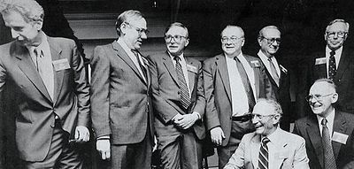
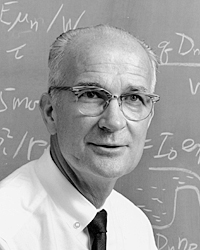
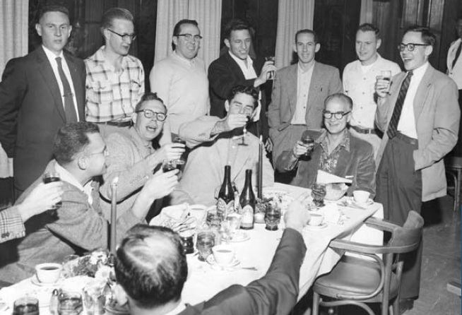
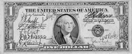

Вероломная восьмерка - Джулиус Бланк, Виктор Гринич, Джин Кляйнер, Джей Ласт, Гордон Мур, Роберт Нойс, Шелдон Робертс и Жан Эрни — восемь физиков и инженеров Shockley Semiconductor Laboratory, которые уволились из-за конфликта с Уильямом Шокли и создали собственную компанию Fairchild Semiconductor. Шокли назвал случившееся «предательством». Кто первым произнёс и кто ввёл в оборот словосочетание «вероломная восьмёрка» — до сих пор не выяснено.

В 1956 году Шокли набрал команду талантливых молодых специалистов для разработки и запуска в производство новых полупроводниковых приборов. Нобелевский лауреат по физике, опытный исследователь и преподаватель не справился с управлением предприятием. Он выбрал, как оказалось позже, бесперспективную стратегию и своими руками создал нетерпимые условия для сотрудников. В марте 1957 года несогласные с диктатом Шокли начали переговоры о создании новой, своей, компании, а в августе заключили соглашение с Шерманом Фэйрчайлдом. Формальный разрыв отношений состоялся 18 сентября 1957 года. Основанная «восьмёркой» Fairchild Semiconductor вскоре выросла в крупнейшего производителя полупроводников, технологического лидера отрасли. Fairchild 1960-х стала важнейшим бизнес-инкубатором Кремниевой Долины, прямо или косвенно причастным к созданию десятков корпораций — от AMD до Zilog.
Зимой 1954—1955 годов изобретатель транзистора, приглашённый профессор Стэнфордского университета Уильям Шокли решил основать собственное дело — массовое производство новейших транзисторов и динисторов. Сначала Шокли договорился о финансировании с Raytheon, но после месяца сотрудничества корпорация свернула проект. В августе 1955 года Шокли обратился за советом к финансисту Арнольду Бекману, владельцу приборостроительного конгломерата Beckman Instruments. Шокли был нужен ровно один миллион долларов. Бекман знал, что Шокли не имел никаких шансов в бизнесе, но он также полагал, что изобретения Шокли будут крайне выгодны для его собственного бизнеса и не должны достаться его конкурентам. Поэтому Бекман согласился создать и профинансировать лабораторию, полигон для разработок Шокли, под обязательство учёного довести эти разработки до серийного выпуска за два года.
Новый филиал Beckman Instruments получил имя Shockley Semi-Conductor Laboratories — с дефисом, как тогда было принято. В течение 1955 года Бекман и Шокли оформили сделку, приобрели за 25 тысяч долларов необходимые патенты и подобрали в Маунтин-Вью, близ Пало-Альто, площадку для опытного производства. Место оказалось не совсем удачным: коллеги Шокли по Bell Labs и RCA один за другим отказались ехать в незнакомый городок с почти сельским укладом жизни, где не было даже междугородного телефона. Так как абсолютное большинство профильных фирм и специалистов в те годы базировалось на восточном побережье, то Шокли пришлось потратиться на объявления в The New York Times и New York Herald Tribune. Среди первых откликнувшихся были Шелдон Робертс из Dow Chemical, Роберт Нойс из Philco и бывший стажёр Beckman Instruments Джей Ласт из Массачусетского технологического института. Газетная кампания принесла около трёхсот откликов, а ещё пятнадцать человек, включая Гордона Мура и Дэвида Аллисона, Шокли буквально отловил на собрании Американского Физического Общества.

Отбор продолжался в течение всего 1956 года. Шокли, всерьёз увлекавшийся «социальными технологиями», которые впоследствии привели его к евгенике, потребовал у каждого кандидата пройти психологическое тестирование в Нью-Йорке. По мнению консультантов Шокли, Мур и Нойс оказались «весьма одарёнными, но не способными к управлению» — на первом этапе этого было достаточно. Затем Шокли подверг кандидатов утомительному устному экзамену.
Бланк, Ласт, Мур, Нойс и Робертс приступили к работе в апреле — мае, Кляйнер, Гринич и Эрни пришли уже летом. К сентябрю 1956 года в лаборатории работали 32 человека, включая самого Шокли. Каждый успешный кандидат решал денежные вопросы с Шокли самостоятельно в меру собственной настойчивости. Кляйнер, Нойс и Робертс добились зарплат в тысячу долларов в месяц, неопытному Ласту досталось 675 долларов в месяц, и только швейцарец Эрни даже не поинтересовался уровнем оплаты. Самому себе Шокли положил 2500 долларов в месяц. Он не держал в секрете зарплаты своих сотрудников, а напротив, вывешивал зарплатные ведомости на всеобщее обозрение.
Восьмерка в 1956 году: образование и опыт работы
Нанятые Шокли члены будущей «восьмёрки» были молоды — от двадцати шести лет до тридцати трёх — и талантливы — шесть из восьми уже имели докторские дипломы. У Эрни их было два — в тридцать два года он уже состоялся как учёный. Эрни, по мнению историка Бо Лоека, был самым одарённым в команде и единственным равным Шокли по интеллекту. Но опыт исследования полупроводников был только у Нойса, а опыт в радиоэлектронике — только у Гринича. Шокли довелось и ошибаться в людях. Технолог Дин Кнапич при поступлении подделал университетский диплом и справки о службе на флоте — подлог вскрылся только тогда, когда Кнапич ушёл к конкурентам, прихватив с собой технологии Shockley. Другой избранник Шокли, Уильям Хапп, был просто некомпетентен, но Шокли постоянно доверял ему принятие решений.
В течение всего 1956 года коллектив Shockley обустраивал опытное производство. Бо́льшая часть персонала под руководством инженеров-механиков была занята сборкой и доводкой оборудования, а «чистые физики» Эрни и Нойс вели прикладные исследования. Шокли разместил Эрни в отдельном помещении, обособленно от коллектива, и поручил ему теоретические расчёты диффузии в полупроводниках. Биограф Нойса Лесли Берлин считает, что за этим решением стоял страх Шокли перед «блестящим молодым теоретиком с двумя докторскими дипломами и сильным акцентом». Эрни протестовал, настаивая на допуске к практическим работам. Шокли пошёл ему навстречу только в октябре 1956 года.
Инженеры и физики с прочным техническим опытом быстро втянулись в тонкости производства полупроводников и больше всех выиграли в личном плане: за год работы у Шокли «восьмёрка» приобрела достаточно практического опыта для самостоятельной работы. Шокли принципиально отказывался нанимать технический персонал: «доктора́ на конвейере» его фирмы должны были лично работать на опытном производстве. После обустройства Шокли сосредоточил усилия на доводке до серийного выпуска динисторов (четырёхслойных диодов, диодов Шокли), а пять сотрудников во главе с Нойсом продолжили работу над полевым транзистором для Beckman Instruments. Отказ Шокли от совершенствования биполярных транзисторов, как показало ближайшее будущее, стал стратегической ошибкой. Подготовка к выпуску динисторов потребовала неоправданно много времени, а выпущенные приборы не нашли массового спроса. Обстоятельства и мотивы, стоявшие за этим решением Шокли, не имеют однозначной трактовки.
По мнению Нойса и Мура, которое разделяют историк Fairchild Дэвид Брок и биограф Шокли Джоэл Шуркин, поворот от биполярных транзисторов к динисторам произошёл неожиданно. Мур рассказывал в 1994 году, что изначально Шокли планировал довести до производства диффузионный биполярный транзистор, но затем учредил «секретный проект» по динистору, а в 1957 году прекратил работы по биполярным транзисторам. Причины этого, по мнению Шуркина, «катастрофического» решения так и остались неизвестными. По мнению биографов Бекмана Текерея и Маерса, динистор был для Шокли прежде всего научной проблемой, и он переключился на неё вопреки интересам бизнеса и в нарушение договорённости с Бекманом.
Бо Лоек, основываясь на архивах Шокли, напротив, считает, что его лаборатория никогда не работала над биполярными транзисторами, поэтому поворота к динисторам не было. Именно динистор и был изначальной и общей целью Шокли и Бекмана, и именно под него Beckman Instruments получала военные контракты на НИОКР. Динистор мог быть массово востребован в телефонии, и предприятие Шокли и Бекмана могло бы иметь успех, если бы Шокли сумел решить проблемы надёжности — но в 1950-е годы решить их было невозможно.

Историки и участники событий единодушны во мнении о том, что Шокли не умел управлять людьми и совершенно не подходил на роль руководителя бизнеса. По мнению Шуркина, Шокли «вообще не имел представления о том, как управлять … говорят, что Шокли видел электроны, потому что слишком много знал о них. Людей же он видел плохо». Шокли с раннего детства был психически неуравновешенным, склонным к вспышкам немотивированной агрессии человеком. Жёстко регламентированная среда Bell Labs и военных лабораторий, в которой Шокли состоялся как учёный, удерживала его от явных срывов. Но она же способствовала превращению Шокли в самоуверенного и замкнутого технократа, искренне верившего в свою способность «управлять посредством графиков и логарифмов». Она же воспитала в Шокли потребность в соперничестве. Оказавшись вне привычной среды, Шокли стал изобретать соперников — ими стали его собственные подчинённые.
В ноябре — декабре 1956 года Шокли выбыл из строя, предоставив коллектив самому себе: 1 ноября Нобелевский комитет объявил о присуждении Шокли, Бардину и Браттейну Нобелевской премии по физике за 1956 год. Выезд в Стокгольм, протокольные банкеты и журналисты переутомили Шокли и усилили худшие стороны его личности. Тем временем график ввода производства в строй трещал по швам, а Бекман требовал сократить расходы. В коллективе и в психике Шокли произошёл надлом.
Историки отрасли, исключая Бо Лоека, характеризуют душевное состояние Шокли в 1956—1957 годах как паранойю. Все телефонные разговоры в лаборатории записывались. Шокли ввёл на предприятии режим внутренней секретности — сотрудники были не вправе делиться с сослуживцами результатами своих работ. При этом сам Шокли, не доверяя сотрудникам, отсылал их отчёты на перепроверку в Bell Labs. Он стал чаще, чем раньше, подчёркнуто грубо и оскорбительно обращаться к сотрудникам — так же, как он общался с собственными детьми. Он начал беспричинно преследовать Робертса и открыто обвинил того во вредительстве, когда секретарша Шокли случайно уколола палец канцелярской кнопкой. Затем Шокли потребовал, чтобы сотрудники прошли проверку на детекторе лжи, чтобы выявить «вредителя». Хорошо понимая, что уход специалистов уровня Робертса может стать катастрофой, Шокли продолжал провоцировать конфликты и оскорблять подчинённых.
Неадекватное поведение Шокли деморализовало коллектив. Уже в январе из-за «производственного конфликта» с Гриничем и Эрни фирму покинул технолог Джонс. Нойс предчувствовал, что следующими будут Эрни и Робертс. Позже имена Нойса и Мура будут неразрывно связаны с историей Fairchild и Intel, но на рубеже 1956—1957 годов они оказались по разные стороны. Мур возглавил несогласных, а Нойс последовательно держался стороны Шокли и, как мог, сглаживал конфликты. Шокли отвечал ему взаимностью: он считал Нойса своей единственной опорой в коллективе и в своих планах на будущее отводил Нойсу роль «менеджера» и «независимого центра власти».
«Дело о кнопке» подтолкнуло несогласных к действиям. В конце марта 1957 года Кляйнер, остававшийся пока вне подозрений, отпросился у Шокли, чтобы якобы посетить выставку в Лос-Анджелесе. Вместо выставки он улетел на девять дней в Нью-Йорк искать инвесторов для новой компании. За Кляйнером стояли Бланк, Гринич, Ласт, Робертс, Эрни и их вожак Мур. Предложением семёрки всерьёз заинтересовались агенты финансовой фирмы Hayden Stone Артур Рок и Алфред Койл: по их мнению, «выпускной класс» нобелевского лауреата Шокли был «обречён на успех».
Разрыва с Бекманом ещё можно было избежать. 29 мая 1957 года Мур с группой товарищей поставил Бекману открытый ультиматум — либо решение «проблемы Шокли», либо уход несогласных. Мур предложил подыскать Шокли кафедру в приличном университете и поставить во главе Shockley профессионального менеджера. Бекман отказался, полагая, что Шокли всё ещё способен исправить положение. Впоследствии Бекман сожалел об этом решении: «Если бы я знал тогда то, что знаю сейчас, я бы распрощался с Шокли. Возможно, я бы тогда всерьёз втянулся в полупроводниковый бизнес. Но я поступил иначе … а потом дело дошло до точки, когда всем стало ясно, что Шокли просто не способен управлять предприятием».
«Новость», переданная Бекманом, оглушила Шокли — но изменить самого себя он не мог. В июне 1957 года Бекман наконец-то поставил между Шокли и коллективом менеджера-посредника, но было поздно: семь ключевых сотрудников уже приняли своё решение. Последним к диссидентам примкнул Нойс: Робертс завербовал его накануне общей встречи «калифорнийской группы» с прилетевшими в Сан-Франциско Роком и Койлом. Встреча в ресторане Redwood Room переросла в учредительное собрание. Старший по возрасту и по положению «краснолицый ирландец» Койл выложил на стол десять новеньких однодолларовых банкнот: «Пусть каждый из нас распишется на каждой купюре. Это и будет наш учредительный договор».
Поиск реального финансирования оказался непростым делом: все инвесторы, на которых целенаправленно выходил Рок, отказали ему. Электронная промышленность США по-прежнему концентрировалась на востоке, а «восьмёрка» настаивала на том, чтобы оставаться в приглянувшейся долине Пало-Альто. В августе 1957 года, совершенно случайно, Рок и Койл встретились с изобретателем и бизнесменом Шерманом Фэйрчайлдом, основателем Fairchild Aircraft и Fairchild Camera. Фэйрчайлд отправил Рока к своему заместителю Ричарду Ходжсону. Ходжсон, поставив на карту собственную репутацию, мгновенно принял решение и в несколько недель устроил все формальности. Уставный капитал новой компании, Fairchild Semiconductor, был поделён на 1325 акций. Каждый из участников «восьмёрки» получил по 100 акций, Hayden Stone — 225 акций, и ещё 300 акций осталось в резерве. Фэйрчайлд предоставил компании займ в 1,38 миллиона долларов. В обеспечение займа участники «восьмёрки» передали Fairchild Camera право голоса по своим акциям и согласились на право Фэйрчайлда выкупить их акции в будущем по твёрдой цене в 3 миллиона долларов за весь уставный капитал.

18 сентября 1957 года Бланк, Гринич, Кляйнер, Ласт, Мур, Нойс, Робертс и Эрни подали Шокли заявления об увольнении. За «предателями», как их называл Шокли, закрепилось собирательное имя «вероломная восьмёрка». Кто его произнёс и кто ввёл в оборот — осталось неизвестным. Жена Шокли после его смерти утверждала, что он никогда не произносил этих слов. Не сохранилось и каких-либо иных свидетельств тому, что он мог так говорить. Шокли так и не смог оправиться от душевного потрясения от «предательства» и понять, почему «они» это сделали. Он до конца жизни отказывался разговаривать с Нойсом, но при этом придирчиво следил за деятельностью «восьмёрки». Он тщательно изучил все записи, оставленные «предателями», и запатентовал все их значимые идеи в пользу владельцев Shockley, при этом не нарушая личные авторские права изобретателей (так, Нойс указан изобретателем в четырёх патентах, заявленных Шокли после разрыва).
В 1960 году, с помощью новой команды, Шокли довёл динистор до серийного выпуска, но время уже было упущено: конкуренты вплотную подошли к разработке интегральных схем. Бекман продал убыточную Shockley инвесторам из Кливленда. 23 июля 1961 года Шокли разбился в автокатастрофе и надолго выбыл из строя, а после выздоровления устранился от дел компании и вернулся к преподаванию в Стэнфорде[67]. В 1969 году IT&T, новые владельцы Shockley, перевели компанию во Флориду. Персонал категорически отказался переезжать, и Shockley тихо прекратила существование.
В ноябре 1957 года «восьмёрка» переехала из гаража Гринича в новое, пустое здание на границе Пало-Альто и Маунтин-Вью. Начальные зарплаты «восьмёрки» составили от 13 800 до 15 600 долларов в год. Тогда же, 11 ноября 1957 года, протоколы собраний зафиксировали первые признаки возвышения Нойса над остальными участниками. Ходжсон, ставший председателем совета директоров, предложил отдать Нойсу оперативное управление компанией, но Нойс отказался от формального лидерства. Фэйрчайлд, хорошо понимавший личность Нойса, не был готов отдать ему первенство, а впоследствии противился назначению Нойса на решающие посты. Независимо от воли Фэйрчайлда, отвечавший за исследования Нойс и отвечавший за производство Мур быстро выдвинулись в «первые среди равных».
«Восьмёрка» сразу поставила себе чёткую стратегическую цель: выпустить линейку кремниевых диффузионных меза-транзисторов для цифровой техники, используя фундаментальные наработки Bell Labs и Shockley. Точный путь к этой цели был ещё неизвестен. Мур, Эрни и Ласт возглавили три группы, исследовавшие три альтернативные технологии. Выход годных NPN-транзисторов Мура оказался выше, и в июле — сентябре 1958 года именно они пошли в серию, а проекты Эрни и Ласта отошли на второй план. Выпуск PNP-транзистора Эрни отложили до начала 1959 года. Так зародился второй конфликт внутри Fairchild (Мур — Эрни). Впоследствии Мур «не замечал» вклада Эрни, а Эрни считал себя несправедливо обойдённым. Но именно транзисторы Мура «сделали» Fairchild — в течение нескольких лет они не имели равных на рынке.
В 1958 году во время тендера на поставку транзисторов для блоков управления ракет «Минитмен» выяснилось, что меза-транзисторы Fairchild не удовлетворяют военным стандартам надёжности. Решение у Fairchild уже существовало — ещё 1 декабря 1957 года Эрни предложил Нойсу новый подход, ныне известный как планарная технология. Весной 1958 года, когда основное производство Fairchild только осваивало меза-технологию, Эрни и Ласт по ночам, втайне от Мура, экспериментировали с первыми планарными транзисторами. Планарная технология стала вторым по значению, после изобретения транзистора, событием в истории микроэлектроники, однако в 1959 году она осталась незамеченной. Fairchild анонсировал массовый переход с меза-технологии на планарную только в октябре 1960 года. Мур даже в 1996 году отказывался признать это достижение Эрни, приписывая его безымянным «инженерам Fairchild».
В 1959 году Шерман Фэйрчайлд воспользовался своим правом на выкуп акций у членов «восьмёрки». Ласт вспоминал в 2007 году, что это ожидаемое событие произошло слишком рано и сделало из бывших партнёров обычных служащих, разрушив командный дух. В ноябре 1960 года вице-президент Fairchild по маркетингу Том Бэй обвинил Ласта в разбазаривании денег и потребовал прикрыть проект Ласта по разработке интегральных схем. Мур отказался помогать Ласту, Нойс уклонился от обсуждения. Этот конфликт стал последней каплей: 31 января 1960 года Ласт и Эрни ушли из Fairchild и возглавили Amelco — микроэлектронную компанию конгломерата Teledyne. Через несколько недель в Amelco перешли Кляйнер и Робертс. Бланк, Гринич, Мур и Нойс остались в Fairchild, «восьмёрка» распалась на две четвёрки.
В 1960—1965 годах Fairchild была безоговорочным лидером рынка полупроводников, опережая ближайших конкурентов и технологически, и по объёму продаж. В начале 1965 года в компании появились первые признаки управленческого конфликта. В ноябре 1965 года из Fairchild в National Semiconductor ушли создатели интегральных операционных усилителей Боб Видлар и Дэвид Талберт. В феврале 1967 года из-за конфликта с Нойсом в National Semiconductor ушли пять топ-менеджеров во главе с Чарлзом Спорком. Нойс, требовавший себе доли в капитале Fairchild, начал судебные тяжбы с акционерами и фактически отстранился от оперативного руководства. В июле 1967 года компания стала убыточной и уступила Texas Instruments первенство на рынке.
В марте 1968 года Мур и Нойс решили, что их время в Fairchild прошло, и вновь, как и девять лет назад, обратились к Артуру Року. Летом 1968 года Мур и Нойс уволились из Fairchild и вместе с Роком основали N-M Electronics. Бланк, Гринич, Кляйнер, Ласт, Робертс и Эрни, отставив в сторону обиды, также вложили свои деньги в компанию Мура и Нойса. Через год, выкупив торговую марку Intel у гостиничной сети Intelco, она приняла название Intel. Мур занимал руководящие посты в Intel до 1997 года и по состоянию на февраль 2012 года остаётся её почётным председателем. Нойс в 1987 году покинул Intel, чтобы возглавить некоммерческий консорциум Sematech. Он скоропостижно умер в 1990 году — первым из «восьмёрки». Гринич ушёл из Fairchild в 1968 году, по сообщению компании — «в долгосрочный отпуск». Он единственный из всей «восьмёрки» не начинал собственного бизнеса, а до конца активной жизни преподавал в Беркли и Стэнфорде. Последним, в 1969 году, Fairchild покинул Бланк. Он открыл собственную финансовую фирму Xicor, специализировавшуюся на инновационных стартапах, и в 2004 году продал её за 529 миллионов долларов.
Эрни управлял Amelco до лета 1963 года, а после конфликта с владельцами Teledyne три года возглавлял Union Carbide Electronics. В июле 1967 года Эрни при поддержке часовой компании SSIH (предшественника Swatch Group) основал Intersil — компанию, создавшую рынок заказных КМОП-микросхем. Схемы, разработанные Intersil по заказу Seiko в 1969—1970 годах, способствовали подъёму рынка японских электронных часов. Intersil был полной противоположностью Intel. Intel выпускал ограниченный набор типовых схем для вычислительной техники и вначале продавал их только на внутреннем рынке США. Эрни, наоборот, сделал ставку на производство заказных КМОП-микросхем с малой потребляемой мощностью и продавал их по всему свету.
Ласт остался в Amelco, затем двенадцать лет работал вице-президентом по технологии в Teledyne. В 1982 году Ласт, ставший к тому времени видным коллекционером графики, основал издательство Hillcrest Press, специализирующееся на книгах по искусству. Робертс после ухода из Amelco некоторое время возглавлял собственный бизнес, а в 1973—1987 годах служил попечителем Института Реннселира. Amelco после многочисленных слияний, поглощений и переименований продолжает работу как подразделение Microchip Technology.
В 1972 году Кляйнер и Том Перкинс из Hewlett-Packard основали венчурный фонд Kleiner Perkins Caufield & Byers (KPCB). KPCB был причастен к созданию или финансированию Amazon.com, Compaq, Genentech, Intuit, Lotus, Macromedia, Netscape, Sun Microsystems, Symantec и десятков других компаний. KPCB вложил в Lotus полтора миллиона долларов, а в 1985 году продал свою долю за восемьдесят миллионов, спровоцировав взлёт на рынке акций производителей ПО. В старости Кляйнер писал, что его целью стало распространение венчурного финансирования в регионы, обделённые им: «Северная Каролина никогда не станет второй Кремниевой долиной. Но там есть три крупных университета. Кремниевая Каролина?»
Компании, основанные или возглавляемые выходцами из Fairchild, получили собирательное (и трудно переводимое на русский язык) имя Fairchildren. Эти компании, начиная с основанных в конце 1960-х AMD, Intel, Intersil и реорганизованной National Semiconductor, отличались как от электротехнических компаний восточного побережья, так и от «старых» калифорнийских электронных компаний, сложившихся в 1940-е и 1950-е годы[. «Старые калифорнийцы» вроде Бекмана или братьев Вериен не доверяли Уолл-стрит и удерживали контроль над своими компаниями в течение десятилетий. Новые компании 1960-х создавались с расчётом на скорую (в срок от трёх до пяти лет) публичную продажу акций. Их основатели с самого начала поддерживали связь с Уолл-стрит и строили стратегию бизнеса, исходя из ожиданий инвестбанков. Другой характерной чертой Кремниевой долины стала мобильность менеджеров и специалистов, постоянная миграция кадров из одной организации в другую. Во многом благодаря Нойсу в Долине сложилась культура, открыто отрицавшая иерархическую культуру традиционных корпораций. В этой среде люди оставались верны друг другу, но не своему работодателю и даже не своей отрасли. «Выпускников» Fairchild можно найти и в интернет-компаниях, и в финансовой отрасли, и в агентствах по связям с общественностью.